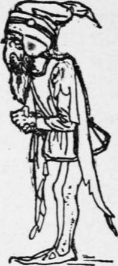

Rumpel Stilts-Ken
Description
This section is from the book "Household Tales by Brothers Grimm", by Brothers Grimm. Also available from Amazon: Household Tales by Brothers Grimm.
Rumpel Stilts-Ken
By the side of a wood, in country a long way oft, ran a fine stream of water; and upon the stream there stood a mill. The miller's house was close by, and the miller, you must know, had a very beautiful daughter. She was, moreover, very shrewd and clever; and the miller was so proud of her, that he one day told the king of the land, who used to come and hunt in the wood, that his daughter could spin gold out of straw. Now this king was very fond of money; and when he heard the miller's boast his greediness was raised, and he sent for the girl to be brought before him. Then he led her to a chamber in his palace where there was a great heap of straw, and gave her a spinning-wheel, and said, " All this must be spun into gold before morning, as you love your life." It was in vain that the poor maiden said that it was only a silly boast of her father, for that she could do no such thing as spin straw into gold: the chamber door was locked, and she was left alone.
She sat down in one corner of the room, and began to bewail her hard fate; when on a sudden the door opened, and a droll-looking little man hobbled in, and said, " Good morrow to you, my good lass; what are you weeping for?" "Alas!" said she, "I must spin this straw into gold, and I know not how." "What will you give me," said the hobgoblin, "to do it for you?" "My necklace," replied the maiden. He took her at her word, and sat himself down to the wheel, and whistled and sangó
"Round about, round about,
Lo and behold!
Reel away, reel away,
Straw into gold!"
And round about the wheel went merrily ; the work was quickly done, and the straw was all spun into gold.
When the king came and saw this, he was greatly astonished and pleased; but his heart grew still more greedy of gain, and he shut up the poor miller's daughter again with a fresh task. Then she knew not what to do, and sat down once more to weep; but the dwarf soon opened the door, and said, "What will you give me to do your task?" "The ring on my finger," said she. So her little friend took the ring, and began to sing
"Round about, round about,
Lo and behold!
Reel away, reel away,
Straw into gold!" till, long before morning, all was done again.
The king was greatly delighted to see all this glittering treasure; but still he had not enough : so he took the miller's daughter to a yet larger heap, and said, "All this must be spun to-night; and if it is, you shall be my queen." As soon as she was alone the dwarf came in, and said, " What will you give me to spin gold for you this third time?" "I have nothing left," said she. "Then say you will give me," said the little man, " the first little child that you may have when you are queen." "That may never be," thought the miller's daughter: and as she knew no other way to get her task done, she said she would do what he asked. Round went the wheel again to the old song, and the manikin once more spun the heap into gold. The king came in the morning, and, finding all he wanted, was forced to keep his word; so he married the miller's daughter, and she really became queen.
At the birth of her first little child she was very glad, and forgot the dwarf, and what she had said. But one day he came into her room, where she was sitting playing with her baby, and put her in mind of it. Then she grieved sorely at her misfortune, and said she would give him all the wealth of the kingdom if he would let her off, but in vain; till at last her tears softened him, and he said, " I will give you three days' grace, and if during that time you tell me my name, you shall keep your child."
Now the queen lay awake all night, thinking of all the odd names that she had ever heard; and she sent messengers all over the land to find out new ones. The next day the little man came, and she began with Timothy, Ichabod, Benjamin, Jeremiah, and all the names she could remember; but to all and each of them he said, "Madam, that is not my name."
The second day she began with all the comical names she could hear of, Bandy-legs, Hunch-back, Crook-shanks, and so on; but the little gentleman still said to every one of them, "Madam, that is not my name."
The third day one of the messengers came back, and said, "I travelled two days without hearing of any other names; but yesterday, as I was climbing a high hill, among the trees of the forest where the fox and the hare bid each other good night, 1 saw a little hut; and before the hut burnt a fire; and round about the fire a funny little dwarf was dancing upon one leg, and singing,ó
"'Merrily the feast I'll make,
Today I'll brew, tomorrow bake;
Merrily I'll dance and sing,
For next day will a stranger bring,
Little does my lady dream
Rumpel stilts-ken in my name!'"
When the queen heard this she jumped for joy, and as soon as her little friend came she sat down upon her throne, and called all her court round to enjoy the fun; and the nurse stood by her side with the baby in her arms, as if it was quite ready to be given up. Then the little man began to chuckle at the thoughts of having the poor child, to take home with him to his hut in the woods; and he cried out, "Now, lady, what is my name?" " Is it John?"asked she. "No, madam!" "Is it “ÓÏ?" "No, madam! " "Is it Jemmy?" "It is not." "Can your name be Rumpel-stilts-ken?" said the lady slily. " Some witch told you that!ósome witch told you that! " cried the little man, and dashed his right foot in a rage so deep into the floor, that he was forced to lay hold of it with both hands to pull it out.
Then he made the best of his way off, while the nurse laughed and the baby crowed ; and all the court jeered at him for having had so much trouble for nothing, and said, " We wish you a very good morning, and a merry feast, Mr Rumpel-stilts-ken ! "
Continue to:
Tags
fairy tales, children's stories, brothers grimm, household tales